Un museo de ciencia y tecnología dedicado a las energías renovables perteneciente a Salto Grande.
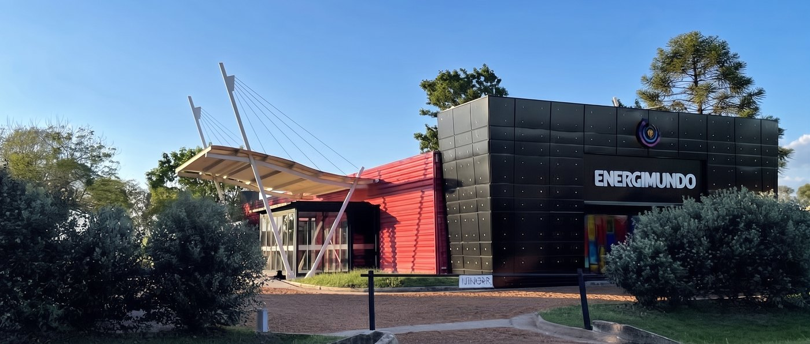
Bienvenidos
Durante este recorrido, vamos a conocer la importancia de Salto Grande y de las energías renovables en el sistema eléctrico, tanto a nivel regional como nacional.
Te invitamos a explorar, experimentar y descubrir cómo la energía moldea nuestro presente y nuestro futuro.
Siete salas · una misma historia de la energía, desde el Big Bang hasta la Represa de Salto Grande.
de la generación eléctrica de Uruguay provino de fuentes renovables en 2025.
Esto significa que casi toda la electricidad de Uruguay proviene del agua, el viento, el sol y la biomasa.
Así cambió la matriz
Generación eléctrica de Uruguay por fuente, año por año.
- Hidráulica46,6%
- Eólica33,8%
- Biomasa13,6%
- Solar4,0%
- Fuentes térmicas2,0%
98% renovable.
Energía de las centrales que abastecen la red pública. Fuente: Balance Energético Nacional, MIEM (2025: dato preliminar).
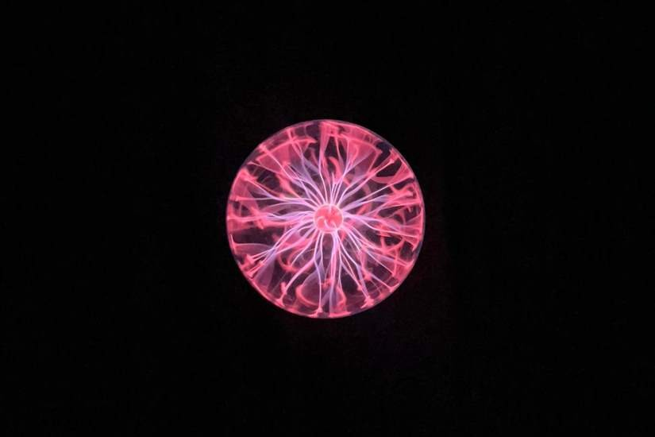
Esferas de Plasma
Aquí podemos ver esferas de plasma que contienen gases nobles a baja presión.
Cuando se aplica energía eléctrica a través de un electrodo central, se generan rayos de plasma que se desplazan hacia afuera a través del gas.
Esta tecnología está basada en experimentos realizados por Nikola Tesla.
Tocá la esfera
Apoyá el dedo sobre el vidrio: los rayos van hacia tu mano, igual que en la esfera de verdad.
¿Por qué pasa? Tu cuerpo conduce la electricidad: al tocar el vidrio le ofrecés a la descarga un camino más fácil, y los rayos se juntan ahí.
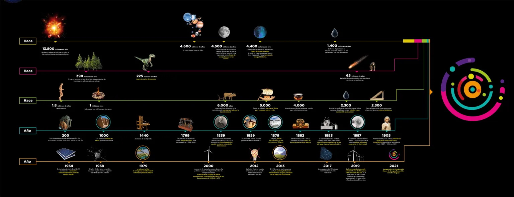
Historia de la Energía
Estamos ahora en la sección Historia de la Energía. Acá podés recorrer una línea de tiempo con los hechos más importantes relacionados con la energía, empezando por el Big Bang.
La línea de tiempo nos ayuda a entender cómo estuvo presente la energía a lo largo de la historia del universo, y cómo los seres humanos aprendieron a aprovechar distintas fuentes de energía.
En la pared, podés ver un video que cuenta esta historia con más detalle.
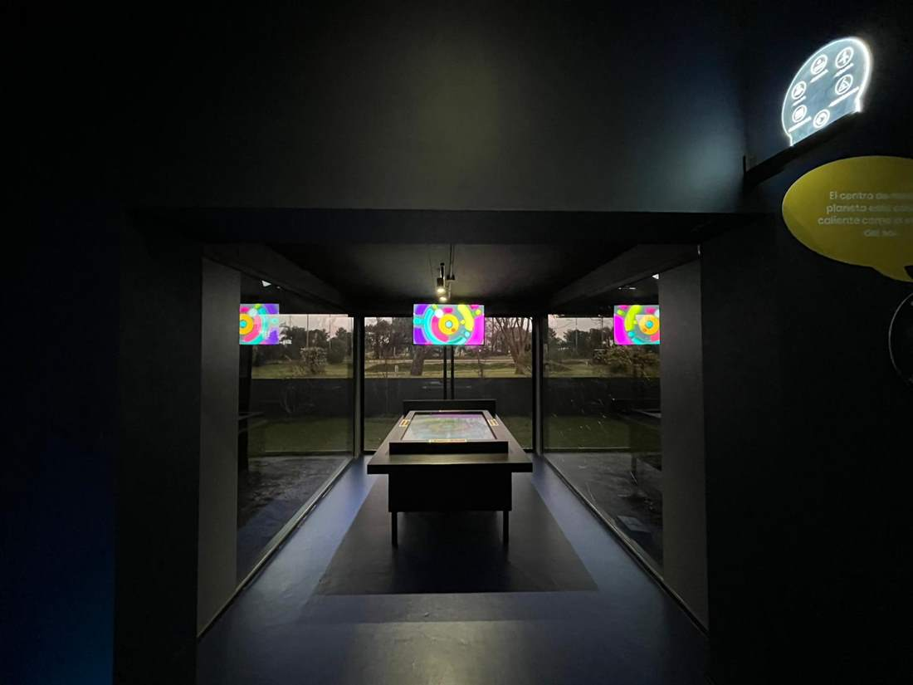
Primera Sección Interactiva
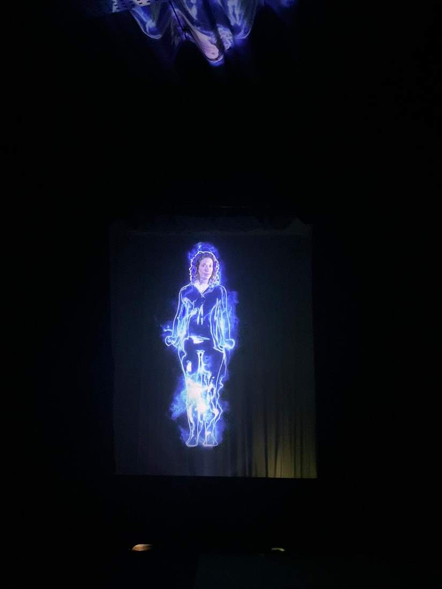
En la tablet, podés armar un rompecabezas. Al completarlo, vas a descubrir información sobre el tipo de energía que elegiste.
También tenemos visores que muestran distintas etapas del proyecto de la Represa de Salto Grande.
Por último, con las tablets de realidad aumentada podés explorar las distintas fuentes de energía renovable que se usan en Uruguay. Solo hay que escanear el código y apuntar la tablet hacia la maqueta para activar la experiencia.
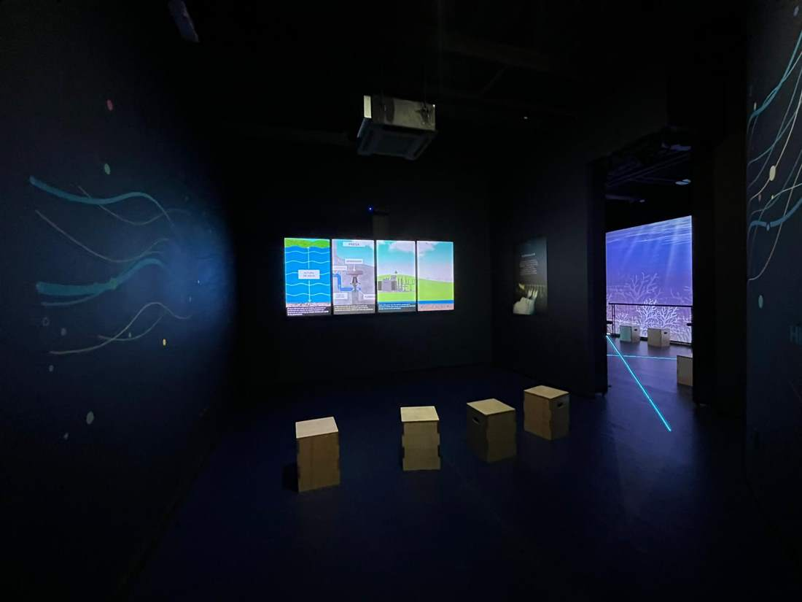
Hidráulica
Ahora entramos en las tres salas dedicadas a la energía hidráulica. ¿Por qué tres salas para este tipo de energía? Precisamente porque somos Salto Grande, uno de los proyectos hidroeléctricos más importantes de la región.
Primero vamos a ver un video que explica cómo funciona la energía hidráulica. Después, con los lentes de realidad virtual, vas a poder hacer un recorrido en 360 grados por la Represa de Salto Grande.
Del río a tu casa
EmbalseLa represa retiene el río y forma un lago. El agua acumulada en altura guarda energía.
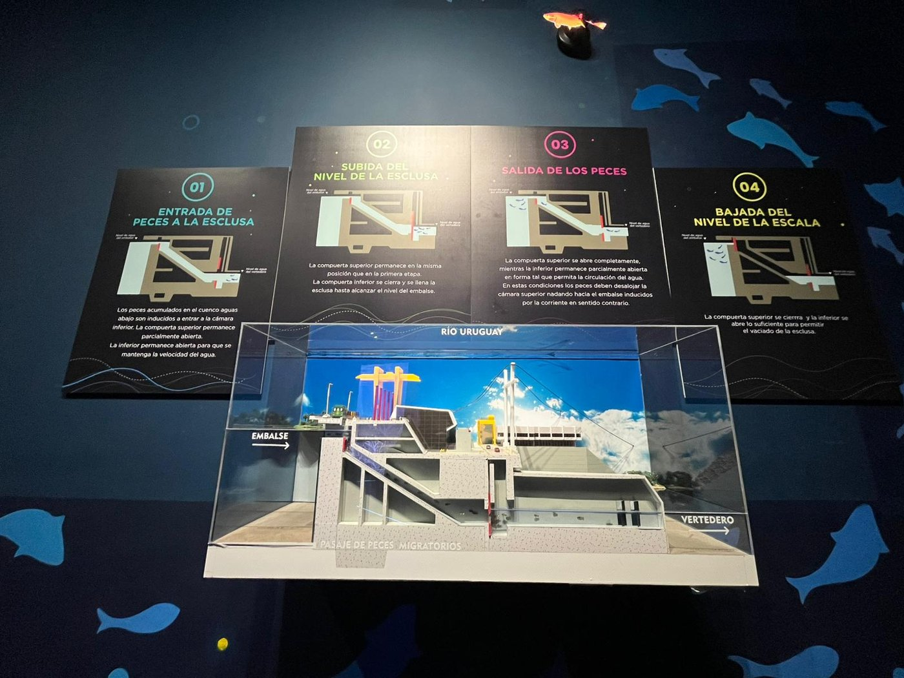
El Proyecto Binacional
Por último, tenemos una maqueta a escala de la Represa binacional de Salto Grande, junto con un corte transversal de la escala de peces —que permite que especies migratorias naden río arriba, continúen su ciclo natural y se reproduzcan.
Cómo suben los peces
La escala de peces funciona como una esclusa: se llena y se vacía para que los peces pasen del río al embalse.
Entrada a la esclusaLos peces que se juntan río abajo entran a la cámara inferior. La compuerta de abajo queda abierta para mantener la corriente del agua y la de arriba, apenas abierta.
Solar y Eólica
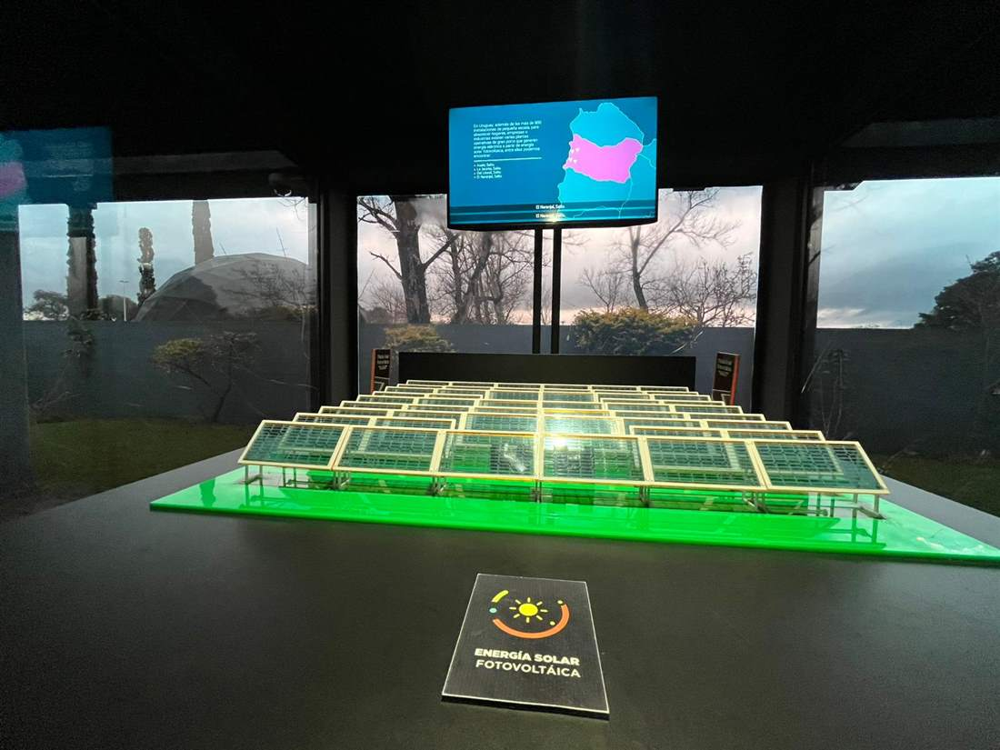
Una maqueta a escala de Asahi, la primera planta solar fotovoltaica de Uruguay, ubicada acá en la zona de Salto Grande —construida gracias a la cooperación entre Japón, Uruguay y la Universidad de la República.
También vemos los visores de Salto Grande, que muestran una etapa más reciente del proyecto.
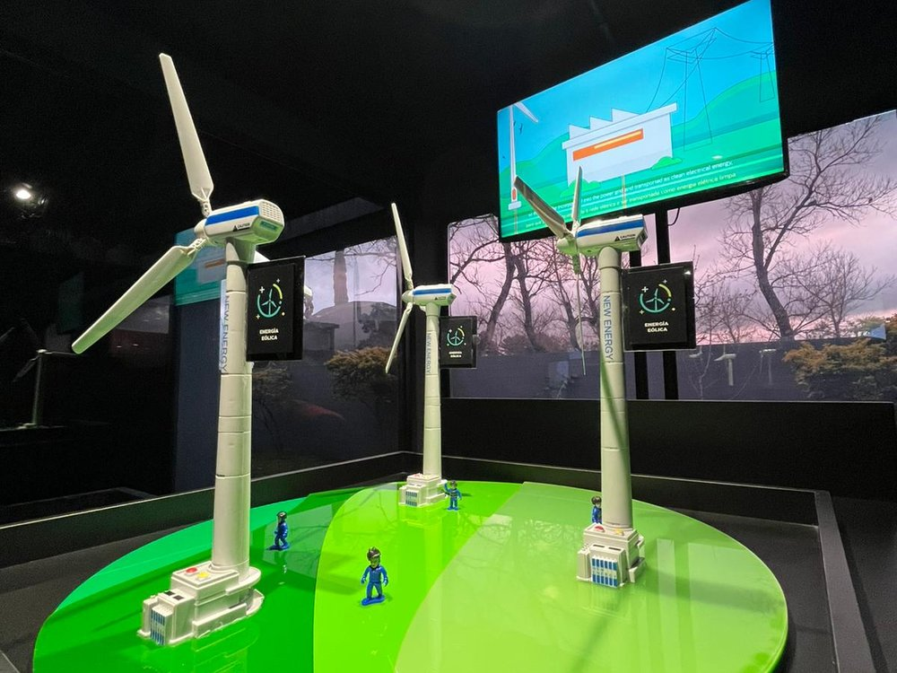
Escaneando el código podés explorar las distintas partes de un aerogenerador. La energía eólica es una de las fuentes más importantes de electricidad en Uruguay —el país tiene el segundo aerogenerador más grande de América Latina, con un diámetro de barrido de 160 metros.
Biomasa, Geotérmica y Marina
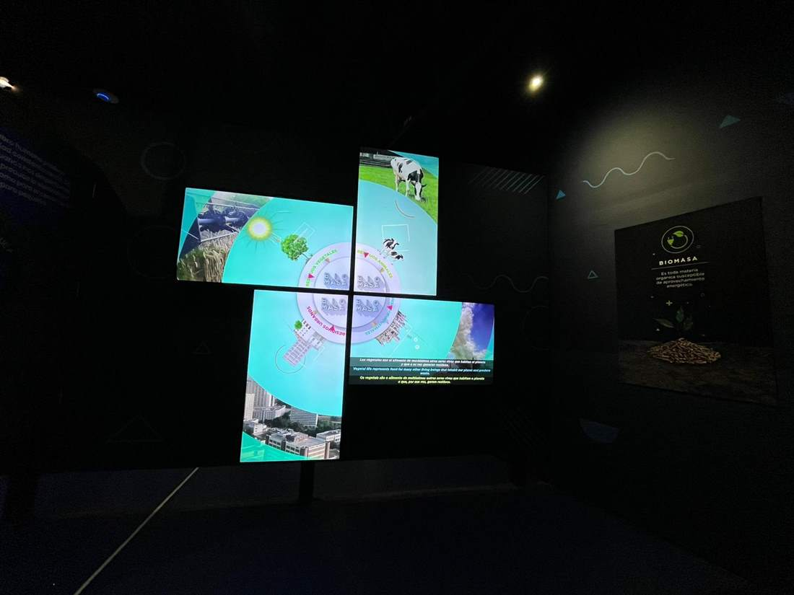
Se obtiene de materia orgánica, como restos forestales y cáscara de arroz. Tiene un rol importante en la energía renovable de Uruguay.
Dos fuentes que todavía no se usan para generar electricidad en Uruguay. La geotérmica es limitada: el agua termal local llega a unos 45°C, cuando se necesitan unos 120°C. La energía marina, por su parte, no cuenta con mareas lo suficientemente fuertes, y la tecnología sigue siendo muy costosa.
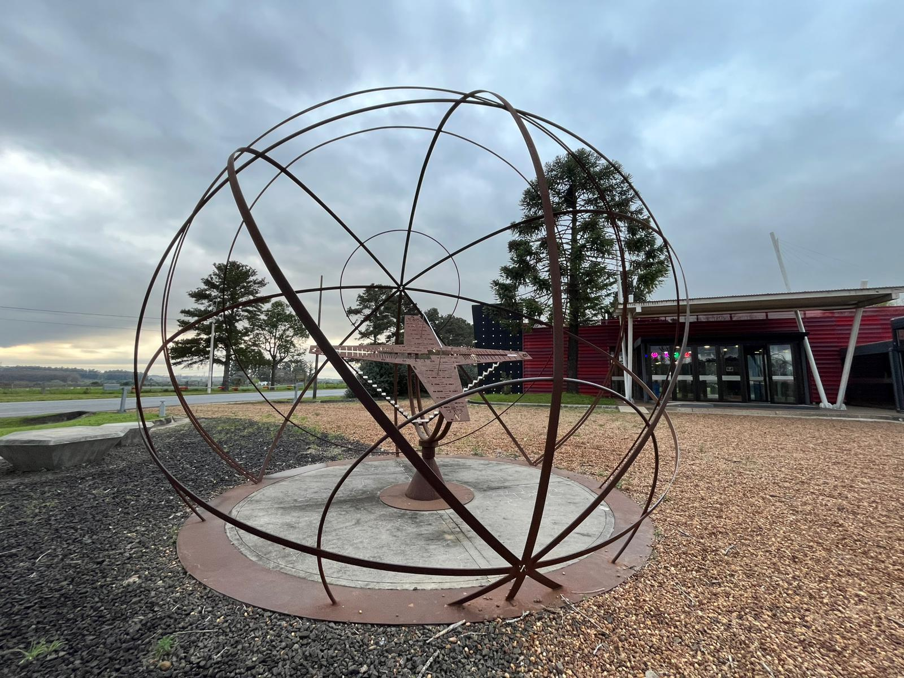
Cronomundo
Esta estructura se llama Cronomundo. Es un reloj y calendario solar —único en América Latina— que permite observar el movimiento del sol y estimar tanto la hora del día como la época del año.
La línea doble representa el Ecuador, mientras que la sombra que proyecta la estructura nos ayuda a identificar el día del año. Un principio similar se usa en una estructura cercana, llamada Gnomon, que permite estimar la hora del día.
Creado por el Ing. Eduardo Álvarez
Cine Geodésico
Por último, tenemos el cine geodésico. Por su diseño, la película no se ve en una pantalla tradicional —las imágenes se proyectan en todo el techo.
Para la mejor experiencia, te recomendamos acostarte y mirar hacia arriba. Vamos a ver un video que recorre la historia del universo y invita a reflexionar sobre nuestro cuidado del medioambiente.
¿Cómo fue tu visita?
Te lleva menos de un minuto y nos ayuda a mejorar Energimundo.
¡Gracias por tu opinión!
Nos ayuda a que la próxima visita sea todavía mejor.
¡Muchas gracias por visitarnos! Esperamos que hayas disfrutado tu experiencia en Energimundo y que descubrieras algo nuevo sobre la energía, la ciencia y nuestro entorno. ¡Esperamos poder recibirte de nuevo!